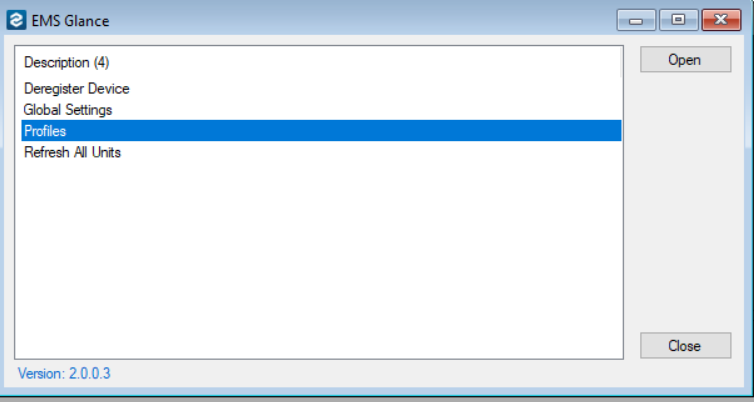
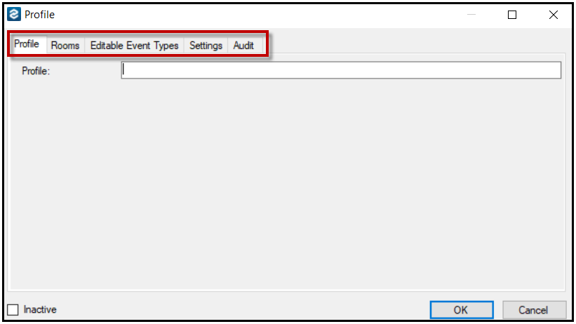
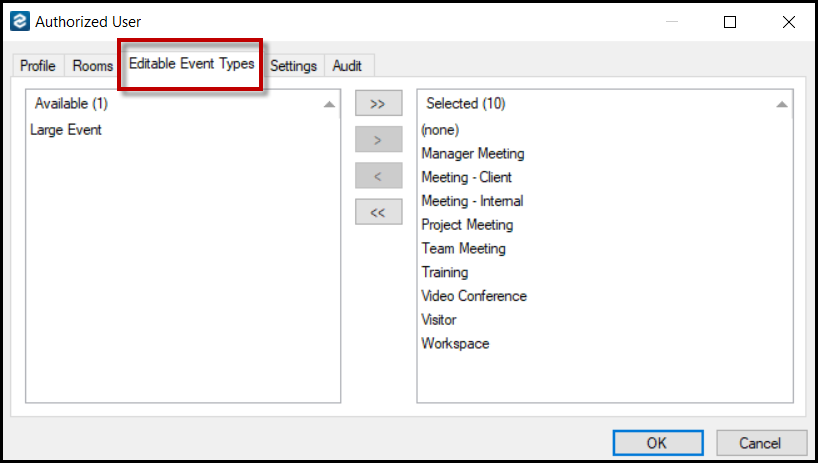

Configure Profiles in
In the (formerly named EMS Glance), you can customize how information displays at the Global level (the default for all Profiles) or for just one Profile (as described in this topic).
This topic outlines how to:
Access Display Settings for Just One Profile
-
On the toolbar, click EMS Glance Settings to access the settings area.
By default, all settings for the profile are initially defined by the global settings; however, you can override these settings for a profile. You can also reset all the settings to their default values.
-
Then select Profiles and click Open.

-
The Profiles window lists all the defined profiles by name. From this window, you can create new profiles, edit existing profiles, or delete profiles.

Profiles Window
Create a New Profile
-
On the toolbar, click EMS Glance Settings to access the settings area.
-
Select Profiles and click Open.
-
Click New to create a new profile.
The Profiles window opens where you can configure profile settings through the following tabs: Profile (the tab that opens by default), Rooms, Editable Event Types, Settings, and Audit tabs.

Name Your Profile
-
Navigate to the Profile dialog box > Profile tab.
-
Name your profile from the Profile tab.
Add or Delete a Room from Your Profile
-
Navigate to Profile dialog box > Rooms tab.
The Rooms tab displays all the rooms that can be added to the profile (the Available list) as well as all the rooms that are currently selected for the profile.
-
Add or delete rooms for a profile on this tab by selecting the room to be added or deleted and clicking the Move (<, >) buttons.
For 28 or earlier, you should deregister your device from the room before you delete the room from the profile. EMS Desktop Client does not automatically deregister a device when you delete a room from a profile. If you have already deleted a room and you did not deregister the device first, you will need to access the database to deregister the device and free up its license.
For Update 29 or later, when you delete a room from a profile, the software automatically deregisters your device from the room, which frees up the license. The software also automatically deregisters your devices when you delete a profile (see Delete a Profile).
Add an Event to Your Profile
-
Navigate to Profile dialog box > Editable Event Types tab.
-
The Editable Event Types tab displays all the event types that can be added to the profile (the Available list) as well as all the event types that are currently selected for the profile. This tab controls which bookings (via event types) are editable in the .

Editable Event Types Tab
Configure a Setting for the Profile
-
Navigate to Profile dialog box > Settings tab.
-
The Settings tab displays the configuration setting for the profile.
By default, all settings for the profile are initially defined by the global settings; however, you can override these settings for a profile. You can also reset all the settings to their default values.
Delete a Profile
For Update 28 or earlier, you should deregister your devices from the rooms in the profile before you delete the profile. EMS Desktop Client does not automatically deregister devices when you delete a profile. If you have already deleted a profile and you did not first deregister the devices, you will need to access the database to deregister the devices and free up the licenses.
For Update 29 or later, when you delete a profile, the software automatically deregisters your devices from the rooms in the profile. The software also automatically deregisters your devices when you delete individual rooms from a profile (see Add or Delete Rooms).
To delete a profile, complete the following steps:
-
On the toolbar, click EMS Glance Settings to access the EMS Glance window.
-
In the EMS Glance window, select Profiles and click Open.
-
In the Profiles window, select the profile you want to delete and then click the Delete button.
-
In the Verify Delete confirmation window, click Yes to confirm the deletion.
The profile is deleted and no longer appears in the list on the Profiles window.
Secondary Authentication
Users can quickly authenticate in the EMS Room Sign App with their work badge. However, for users without a badge, secondary authentication is necessary. You can configure a Forgot my Badge button that allows for this secondary authentication.
See Also: Authentication.